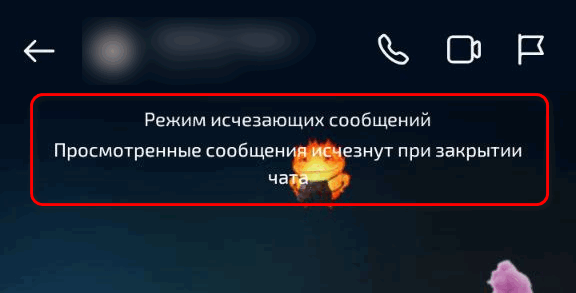
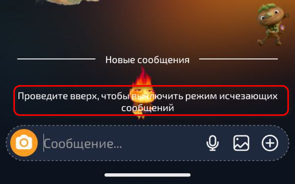

Как в Инстаграм выключить режим исчезающих сообщений в приложении

В Инстаграме* выключить режим исчезающих сообщений можно с помощью свайпа. Режим предполагает скрытые письма, которые будут удалены после прочтения.
Что такое скрытые сообщения в Инстаграме*
Режим исчезающих сообщений в Инстаграме* предполагает передачу писем с важной информацией, секретной или наоборот, временной. В этом чате можно обмениваться фотографиями, отправлять наклейки и текст. Но такие уведомления будут удалены, как только получатель их прочтет, увидеть их повторно не получится, а посмотреть контент закрытой страницы можно. Чтобы включить режим исчезающих сообщений на Айфоне или Андроиде, нужно выбрать чат в Директе и провести пальцем вверх. Появится короткое уведомление, что будет активирован режим скрытых сообщений. Получатель также увидит, что чат изменился и может отменить предложение о переходе в скрытую переписку.
Как включить функцию
Для активации такого чата не всегда хватает одного свайпа. Предположим, что вы провели вверх, но скрытый чат не активировался. Тогда нужно слегка задержать палец на экране, и функция станет доступной.

У чата с исчезающими сообщениями есть отличия:- особый дизайн. Тема меняется на темную, а сверху появляется оповещение что включен режим;
- нельзя создавать групповые переписки;
- у отправленных фотографий особого характера также будет спойлер скрывающий содержимое;
- о получении сообщений приходят уведомления. Если второй участник чата прочел, то отправитель получит оповещение: «Прочитано».
Сделав скриншот снимка, который был отправлен в таком чате, отправитель получит уведомление.
Прочесть старые сообщения: где и как найти
Закрывая режим исчезающих сообщений пользователь больше не сможет вернуться к ним. Это одна из особенностей чатов такого типа: сохранить, переслать или получить письма после удаления переписки не получится.
Единственный вариант, как в дальнейшем возвращаться к таким сообщениям – использовать функцию создания скриншотов. Создав снимок экрана, второй участник беседы получит уведомление об этом. То есть, снимать переписку анонимно не получится.
Срок «жизни» сообщений в таких чатах составляет всего шесть часов. Если получатель не успел просмотреть – те автоматически удаляются.
Как отключить режим в Директе на Андроиде и Айфоне
Выйти из режима исчезающих сообщений также просто, как его подключить:
- Открыть Директ – перейти в чат со скрытыми письмами.

- Провести пальцем вверх и задержать – подождать отмены режима.
Теперь можно переписываться и сохранять сообщения, пересылать и не бояться за то, что о скриншотах придет уведомление. Хотя в Инстаграме* есть функция уведомления о съемке экрана, если было сфотографировано временное фото или видео. При отключении режима исчезающих сообщений в Инстаграме* у одного участника чата, другой получит об этом уведомление. Возобновить скрытые письма может любой из собеседников, не получая на это согласия у второго.
Когда может понадобиться
В Инстаграме* если работает режим исчезающих сообщений в переписке с незнакомым пользователем – не стоит сразу открывать отправленные фото, видео и ссылки. Нередко функцией пользуются мошенники и хакеры, которые получают доступ к чужим аккаунтам при помощи обманных ссылок. Но есть и положительные стороны режима:
- возможность вести личную переписку с другим человеком. Ту, которая не будет сохранена или использована третьими лицами, потому что нельзя ни переслать сообщения, ни сфотографировать;
- передача важных данных. Мы не рекомендуем отправлять в Директе пароли и номера банковских карт, но если Инстаграм* единственный способ связи – то стоит воспользоваться режимом исчезающих сообщений;
- быстрые чаты с клиентами. Чтобы не засорять Директ постоянными переписками.
Из-за автоматического удаления будет полезен продавцам, экспертам в переписке с покупателями или заинтересованными лицами. Но только в том случае, если не потребуется дальнейшее подтверждение сотрудничества.